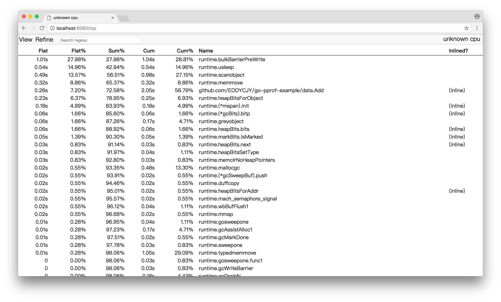
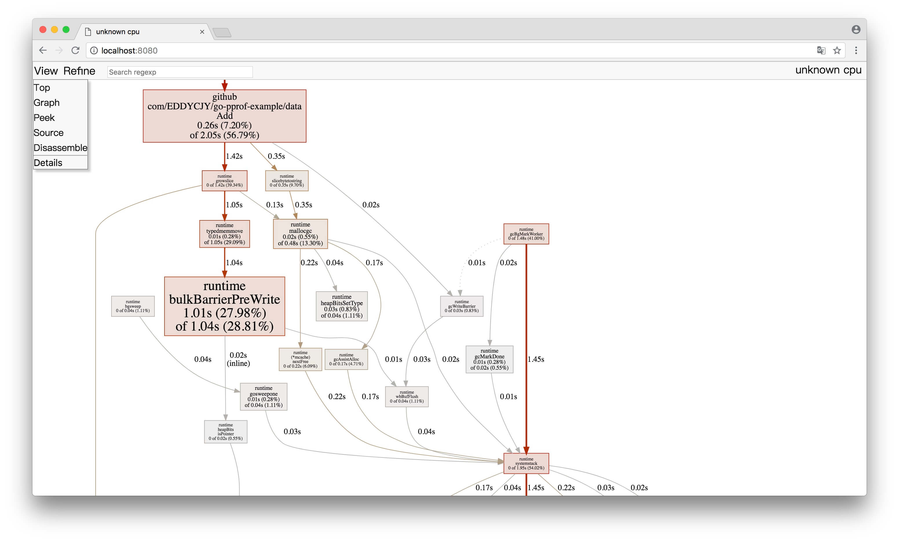
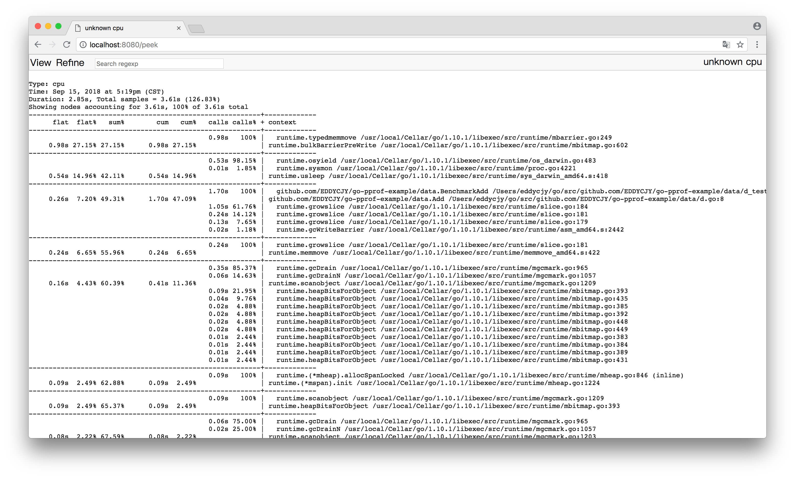
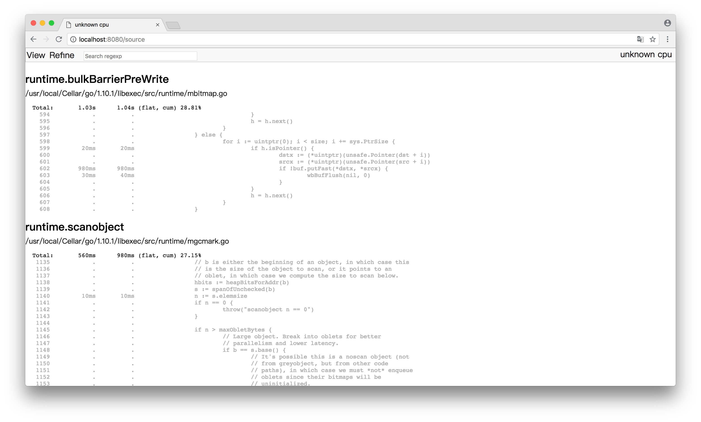
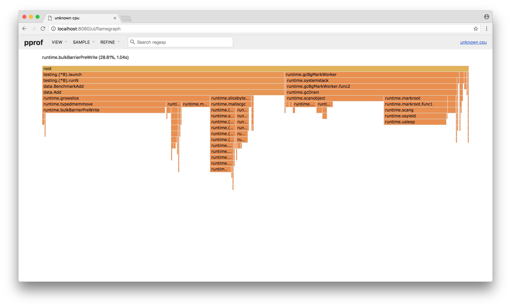

9.1 Go 大殺器之效能剖析 PProf
前言
寫了幾噸程式碼，實作了幾百個介面。功能測試也通過了，終於成功的部署上線了
結果，效能不佳，什麼鬼？😭
想做效能分析
PProf
想要進行效能最佳化，首先矚目在 Go 自身提供的工具鏈來作為分析依據，本文將帶你學習、使用 Go 後花園，涉及如下：
- runtime/pprof：採集程式（非 Server）的執行資料進行分析
- net/http/pprof：採集 HTTP Server 的執行時資料進行分析
是什麼
pprof 是用於視覺化和分析效能分析資料的工具
pprof 以 profile.proto 讀取分析樣本的集合，並生成報告以視覺化並幫助分析資料（支援文字和圖形報告）
profile.proto 是一個 Protocol Buffer v3 的描述檔案，它描述了一組 callstack 和 symbolization 資訊， 作用是表示統計分析的一組取樣的呼叫棧，是很常見的 stacktrace 設定檔案格式
支援什麼使用模式
- Report generation：報告生成
- Interactive terminal use：互動式終端使用
- Web interface：Web 介面
可以做什麼
- CPU Profiling：CPU 分析，按照一定的頻率採集所監聽的應用程式 CPU（含暫存器）的使用情況，可確定應用程式在主動消耗 CPU 週期時花費時間的位置
- Memory Profiling：記憶體分析，在應用程式進行堆分配時記錄堆疊跟蹤，用於監視當前和歷史記憶體使用情況，以及檢查記憶體洩漏
- Block Profiling：阻塞分析，記錄 goroutine 阻塞等待同步（包括定時器通道）的位置
- Mutex Profiling：互斥鎖分析，報告互斥鎖的競爭情況
一個簡單的例子
我們將編寫一個簡單且有點問題的例子，用於基本的程式初步分析
編寫 demo 檔案
（1）demo.go，檔案內容：
package main
import (
"log"
"net/http"
_ "net/http/pprof"
"github.com/EDDYCJY/go-pprof-example/data"
)
func main() {
go func() {
for {
log.Println(data.Add("https://github.com/EDDYCJY"))
}
}()
http.ListenAndServe("0.0.0.0:6060", nil)
}
```go
（2）data/d.go，檔案內容：
```go
package data
var datas []string
func Add(str string) string {
data := []byte(str)
sData := string(data)
datas = append(datas, sData)
return sData
}
執行這個檔案，你的 HTTP 服務會多出 /debug/pprof 的 endpoint 可用於觀察應用程式的情況
分析
一、透過 Web 介面
檢視當前總覽：訪問 http://127.0.0.1:6060/debug/pprof/
/debug/pprof/
profiles:
0 block
5 goroutine
3 heap
0 mutex
9 threadcreate
full goroutine stack dump
這個頁面中有許多子頁面，咱們繼續深究下去，看看可以得到什麼？
- cpu（CPU Profiling）:
$HOST/debug/pprof/profile，預設進行 30s 的 CPU Profiling，得到一個分析用的 profile 檔案 - block（Block Profiling）：
$HOST/debug/pprof/block，檢視導致阻塞同步的堆疊跟蹤 - goroutine：
$HOST/debug/pprof/goroutine，檢視當前所有執行的 goroutines 堆疊跟蹤 - heap（Memory Profiling）:
$HOST/debug/pprof/heap，檢視活動物件的記憶體分配情況 - mutex（Mutex Profiling）：
$HOST/debug/pprof/mutex，檢視導致互斥鎖的競爭持有者的堆疊跟蹤 - threadcreate：
$HOST/debug/pprof/threadcreate，檢視建立新OS執行緒的堆疊跟蹤
二、透過互動式終端使用
（1）go tool pprof http://localhost:6060/debug/pprof/profile?seconds=60
$ go tool pprof http://localhost:6060/debug/pprof/profile\?seconds\=60
Fetching profile over HTTP from http://localhost:6060/debug/pprof/profile?seconds=60
Saved profile in /Users/eddycjy/pprof/pprof.samples.cpu.007.pb.gz
Type: cpu
Duration: 1mins, Total samples = 26.55s (44.15%)
Entering interactive mode (type "help" for commands, "o" for options)
(pprof)
執行該命令後，需等待 60 秒（可調整 seconds 的值），pprof 會進行 CPU Profiling。結束後將預設進入 pprof 的互動式命令模式，可以對分析的結果進行檢視或匯出。具體可執行 pprof help 檢視命令說明
(pprof) top10
Showing nodes accounting for 25.92s, 97.63% of 26.55s total
Dropped 85 nodes (cum <= 0.13s)
Showing top 10 nodes out of 21
flat flat% sum% cum cum%
23.28s 87.68% 87.68% 23.29s 87.72% syscall.Syscall
0.77s 2.90% 90.58% 0.77s 2.90% runtime.memmove
0.58s 2.18% 92.77% 0.58s 2.18% runtime.freedefer
0.53s 2.00% 94.76% 1.42s 5.35% runtime.scanobject
0.36s 1.36% 96.12% 0.39s 1.47% runtime.heapBitsForObject
0.35s 1.32% 97.44% 0.45s 1.69% runtime.greyobject
0.02s 0.075% 97.51% 24.96s 94.01% main.main.func1
0.01s 0.038% 97.55% 23.91s 90.06% os.(*File).Write
0.01s 0.038% 97.59% 0.19s 0.72% runtime.mallocgc
0.01s 0.038% 97.63% 23.30s 87.76% syscall.Write
- flat：給定函式上執行耗時
- flat%：同上的 CPU 執行耗時總比例
- sum%：給定函式累積使用 CPU 總比例
- cum：當前函式加上它之上的呼叫執行總耗時
- cum%：同上的 CPU 執行耗時總比例
最後一列為函式名稱，在大多數的情況下，我們可以透過這五列得出一個應用程式的執行情況，加以最佳化 🤔
（2）go tool pprof http://localhost:6060/debug/pprof/heap
$ go tool pprof http://localhost:6060/debug/pprof/heap
Fetching profile over HTTP from http://localhost:6060/debug/pprof/heap
Saved profile in /Users/eddycjy/pprof/pprof.alloc_objects.alloc_space.inuse_objects.inuse_space.008.pb.gz
Type: inuse_space
Entering interactive mode (type "help" for commands, "o" for options)
(pprof) top
Showing nodes accounting for 837.48MB, 100% of 837.48MB total
flat flat% sum% cum cum%
837.48MB 100% 100% 837.48MB 100% main.main.func1
- -inuse_space：分析應用程式的常駐記憶體佔用情況
- -alloc_objects：分析應用程式的記憶體臨時分配情況
（3） go tool pprof http://localhost:6060/debug/pprof/block
（4） go tool pprof http://localhost:6060/debug/pprof/mutex
三、PProf 視覺化介面
這是令人期待的一小節。在這之前，我們需要簡單的編寫好測試用例來跑一下
編寫測試用例
（1）新建 data/d_test.go，檔案內容：
package data
import "testing"
const url = "https://github.com/EDDYCJY"
func TestAdd(t *testing.T) {
s := Add(url)
if s == "" {
t.Errorf("Test.Add error!")
}
}
func BenchmarkAdd(b *testing.B) {
for i := 0; i < b.N; i++ {
Add(url)
}
}
（2）執行測試用例
$ go test -bench=. -cpuprofile=cpu.prof
pkg: github.com/EDDYCJY/go-pprof-example/data
BenchmarkAdd-4 10000000 187 ns/op
PASS
ok github.com/EDDYCJY/go-pprof-example/data 2.300s
-memprofile 也可以瞭解一下
啟動 PProf 視覺化介面
方法一：
$ go tool pprof -http=:8080 cpu.prof
方法二：
$ go tool pprof cpu.prof
$ (pprof) web
如果出現 Could not execute dot; may need to install graphviz.，就是提示你要安裝 graphviz 了 （請右拐谷歌）
檢視 PProf 視覺化介面
（1）Top

（2）Graph

框越大，線越粗代表它佔用的時間越大哦
（3）Peek

（4）Source

透過 PProf 的視覺化介面，我們能夠更方便、更直觀的看到 Go 應用程式的呼叫鏈、使用情況等，並且在 View 選單欄中，還支援如上多種方式的切換
你想想，在煩惱不知道什麼問題的時候，能用這些輔助工具來檢測問題，是不是瞬間效率翻倍了呢 👌
四、PProf 火焰圖
另一種視覺化資料的方法是火焰圖，需手動安裝原生 PProf 工具：
（1） 安裝 PProf
$ go get -u github.com/google/pprof
（2） 啟動 PProf 視覺化介面:
$ pprof -http=:8080 cpu.prof
（3） 檢視 PProf 視覺化介面
開啟 PProf 的視覺化介面時，你會明顯發現比官方工具鏈的 PProf 精緻一些，並且多了 Flame Graph（火焰圖）
它就是本次的目標之一，它的最大優點是動態的。呼叫順序由上到下（A -> B -> C -> D），每一塊代表一個函式，越大代表佔用 CPU 的時間更長。同時它也支援點選塊深入進行分析！

總結
在本章節，粗略地介紹了 Go 的效能利器 PProf。在特定的場景中，PProf 給定位、剖析問題帶了極大的幫助
希望本文對你有所幫助，另外建議能夠自己實際操作一遍，最好是可以深入琢磨一下，內含大量的用法、知識點 🤓
思考題
你很優秀的看到了最後，那麼有兩道簡單的思考題，希望拓展你的思路
（1）flat 一定大於 cum 嗎，為什麼？什麼場景下 cum 會比 flat 大？
（2）本章節的 demo 程式碼，有什麼效能問題？怎麼解決它？